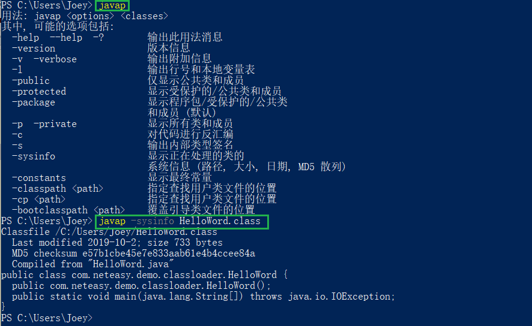
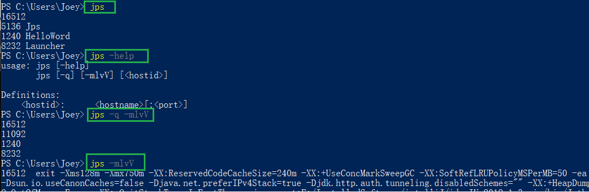
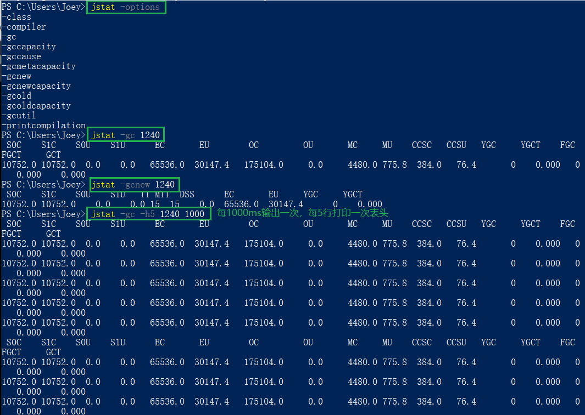
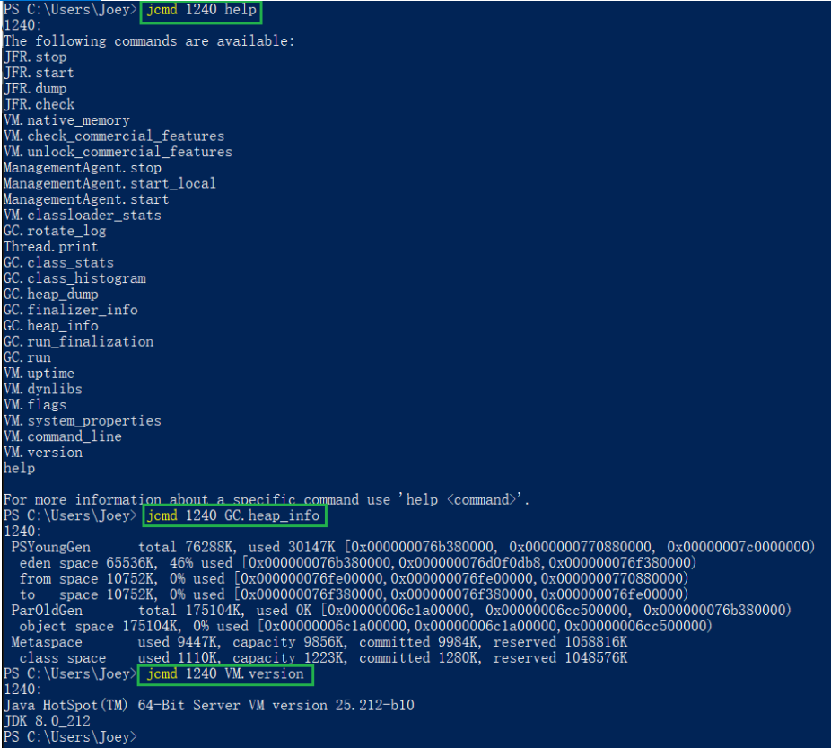
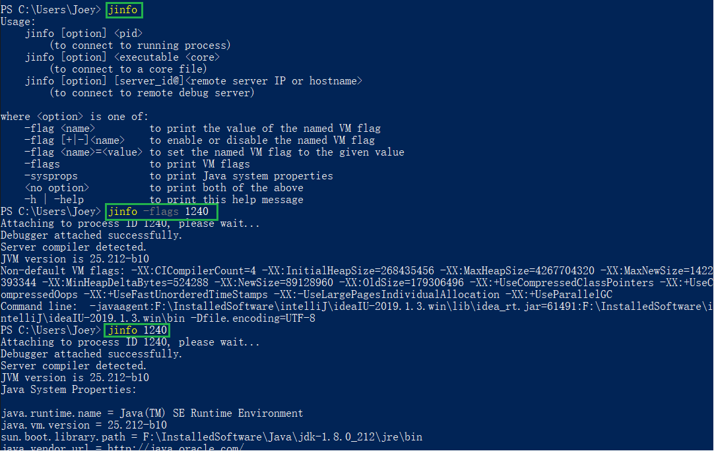
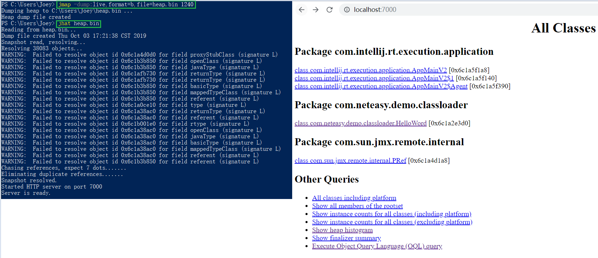
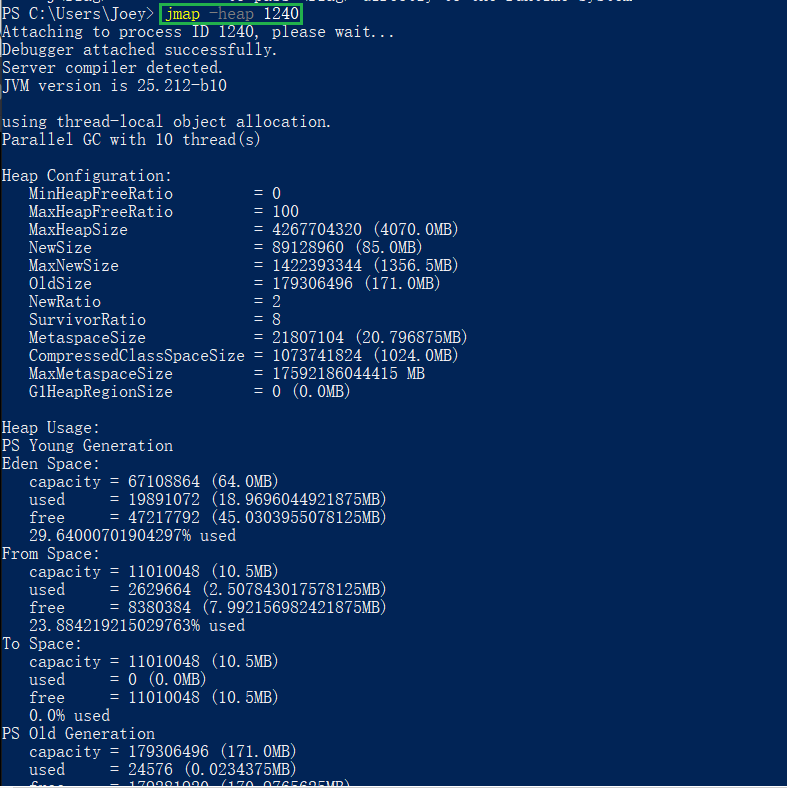
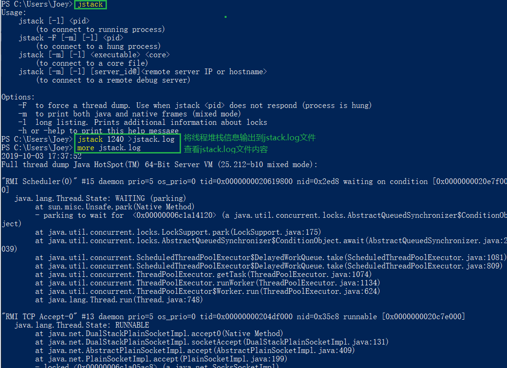
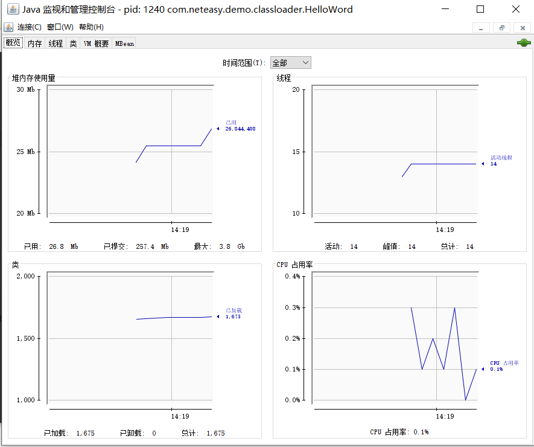

原文连接:https://www.cnblogs.com/coding-diary/p/11794407.html
javap
Java反编译工具，主要用于根据Java字节码文件反汇编为Java源代码文件
用法：javap
| 用法 | 描述 |
|---|---|
| javap -help —help -? | 输出此用法消息 |
| javap -version | 版本消息 |
| javap -v -verbose | 输出附加信息 |
| javap -l | 输出行号和本地变量表 |
| javap -public | 仅显示公共类和成员 |
| javap -protected | 显示受保护的/公共类和成员 |
| javap -package | 显示程序包/受保护的/公共类和成员 (默认) |
| javap -p -private | 显示所有类和成员 |
| javap -c | 对代码进行反汇编 |
| javap -s | 输出内部类型签名 |
| javap -sysinfo | 显示正在处理的类的系统信息 (路径, 大小, 日期, MD5 散列) |
| javap -constants | 显示最终常量 |
| javap -classpath | 指定查找用户类文件的位置 |
| javap -cp | 指定查找用户类文件的位置 |
| javap -bootclasspath | 覆盖引导类文件的位置 |

jps
jps（Java Virtual Machine Process Status Tool）显示当前所有Java进程pid的命令
用法：jps [options] [hostid]
| 用法 | 描述 |
|---|---|
| jps -q | 仅输出VM标识符 |
| jps -m | 输出main method参数 |
| jps -l | 输出完全的包名，应用主类名，jar完全路径名 |
| jps -v | 输出JVM参数 |
| jps -V | 输出通过flag文件传递到JVM的参数 |
| jps -Joption | 传递参数到JVM，如：-J-Xms512m |

jstat
jstat监视Java虚拟机统计信息
用法：jstat - [-t] [-h] [ []]
| 用法 | 描述 |
|---|---|
| jstat -gc pid | 显示gc的信息，查看gc的次数及时间 |
| jstat -gccapacity pid | 内存GC分区中各对象的使用和占用大小 |
| jstat -gcutil pid | 统计gc信息汇总 |
| jstat -gcnew pid | 年轻代对象的信息 |
| jstat -gcnewcapacity pid | 年轻代对象的信息及其占用量 |
| jstat -gcold pid | 老年代对象的信息 |
| jstat -gcoldcapacity pid | 老年代对象的信息及其占用量 |
| jstat -gcpermcapacity pid | perm对象的信息及其占用量 |
| jstat -class pid | 显示加载class数量，及其所占空间 |
| jstat -compiler pid | 显示JVM实时编译的数量等信息 |
| jstat -printcompilation pid | 打印当前JVM执行的信息 |

关于命令中表头等信息的详细解释可以参考 jstat命令手册
jcmd
jcmd工具可以替代jps工具查看本地的JVM信息
用法： jcmd [pid | main-class] command…|PerfCounter.print|
| 用法 | 描述 |
|---|---|
| jcmd | 查看本地的Java进程列表，获取其pid |
| jcmd pid help | 查看其支持的命令列表 |
| jcmd pid Thread.print -l | 打印线程栈 |
| jcmd pid VM.command_line | 打印启动命令及参数 |
| jcmd pid VM.system_properties | 查看系统属性内容 |
| jcmd pid VM.uptime | 查看虚拟机启动时间 |
| jcmd pid GC.heap_dump data/filename.dump | 查看JVM的Heap Dump |
| jcmd pid GC.class_histogram | 查看类的统计信息 |
| jcmd pid PerfCounter.print | 查看性能统计 |

jinfo
jinfo可以查看运行中JVM的全部参数，还可以设置部分参数
用法：
- jinfo [option] pid
- jinfo [option] executable core
- jinfo [option] [server-id@]remote-hostname-or-ip
| 参数/option | 描述说明 |
|---|---|
| pid | 对应JVM的进程id |
| excutable core | 产生core dump文件 |
| [server-id@]remote-hostname-or-ip | 远程的ip或hostname，server-id标记服务的唯一性id |
| no option | 输出全部的参数和系统属性 |
| -flag name | 输出对应名称的参数 |
| -flag [+/-]name | 开启/关闭对应名称的参数 |
| -flag name=value | 设定对应名称的参数 |
| -flags | 输出全部的参数 |
| -sysprops | 输出系统属性 |

jhat
jhat即Java Heap Analyse Tool，是分析Java堆的命令，可以将堆中的对象以html的形式显示出来，支持对象查询语言OQL
用法：jhat [-stack ] [-refs ] [-port ] [-baseline ] [-debug ] [-version] [-h/-help]
| 用法参数 | 描述说明 |
|---|---|
| -J | 启动JVM时传入启动参数，如：-J-XMx512m指定运行jhat的JVM使用的最大堆内存为512m |
| -stack false/true | 关闭对象分配调用栈跟踪，默认为true |
| -refs false/true | 关闭对象引用跟踪，默认为true |
| -port port-number | 设定jhat服务的端口号，默认为7000 |
| -exclude exclude-file | 指定文件对象查询时需要排除的数据成员列表，如：指定文件列出了java.lang.String.value，那么当从某个特定对象计算可达对象列表时，引用路径涉及java.lang.String.value的都会被排除 |
| -baseline file | 指定一个基准堆转储在两个和heap dumps中有相同object id的对象会被标记为不是新的，其他对象被标记为新的，在比较两个不同的堆转储时很有用 |
| -debug int | 设置debug级别，0表示不输出调试信息，值越大表示输出的debug信息越详细 |
| -version | 启动后只显示版本信息就退出 |

jmap
jmap会打印Java进程内存中object的情况，或者将JVM中的堆以二进制输出成文本
用法：
- jmap [option] pid
- jmap [option] executable core
- jamp [option] [server-id@] remote-hostname-or-ip
| 用法参数 | 描述说明 |
|---|---|
| 无参，会打印目标JVM加载的每个共享对象的起始地址，映射大小及映射文件的路径 | |
| -dump:[live,] format=b, file= | 使用hprof二进制输出heap内容到文件，live代表只输出存活对象 |
| -finalizerinfo | 打印正等候回收的对象的信息 |
| -heap | 打印heap的概要信息，GC使用的算法，heap的配置及wise heap的使用情况 |
| -histo[:live] | 打印每个class的内存信息，JVM的内部类会加上前缀“*”，live代表只输出存活对象 |
| -clstats | 打印classloader和JVM heap方法区的信息，每个classloader的名字，活泼性，地址，父classloader和加载的class数量（另外内部String数量和占用内存数量也会打印出来） |
| -F | 强迫，在pid没有响应的时候使用-dump或者-histo参数，在这个模式下，live参数无效 |
| -h/-help | 打印辅助信息 |
| -J | 传递参数给jmap启动的JVM |

jstack
jstack是堆栈跟踪工具，用于打印给定的Java进程id或core file或远程调试服务的Java堆栈信息，如果在64位机器上，需要指定选项“-J-64”
用法：
- jstack [option] pid
- jstack [option] executable core
- jsatck [option] [server-id@] remote-hostname-or-ip
| 参数/option | 描述说明 |
|---|---|
| pid | 对应JVM的进程id |
| excutable core | 产生core dump文件 |
| [server-id@]remote-hostname-or-ip | 远程的ip或hostname，server-id标记服务的唯一性id |
| -F | 强制打印栈信息 |
| -l | 长列表，打印关于锁的附加信息 |
| -m | 打印Java和native c/c++框架的所有栈信息 |
| -h/-help | 打印辅助信息 |

jconsole
jconsole是JDK内置的图形化Java性能分析工具，可以在命令行运行。启动可以更具Java进程id查看程序的堆使用，线程情况，类信息等。

jvisualvm
jvisualvm也是一个可以图形化Java性能分析的工具，在JDK6，JDK7，JDK8中存在，JDK9开始就被移除了，当然用户可以通过visualvm的官方网站自己下载。